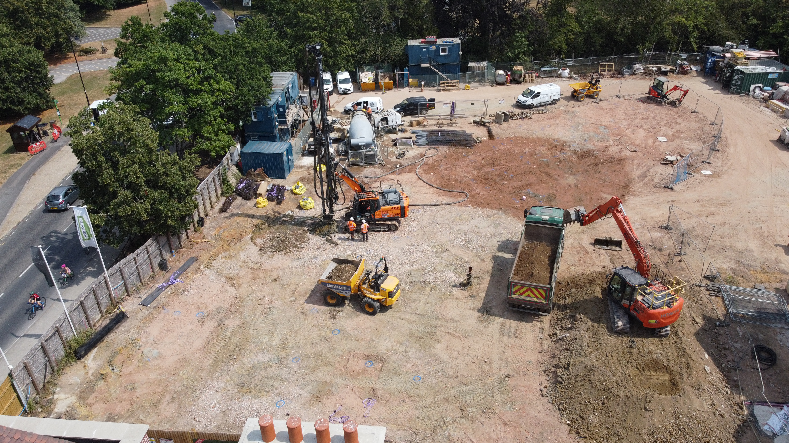
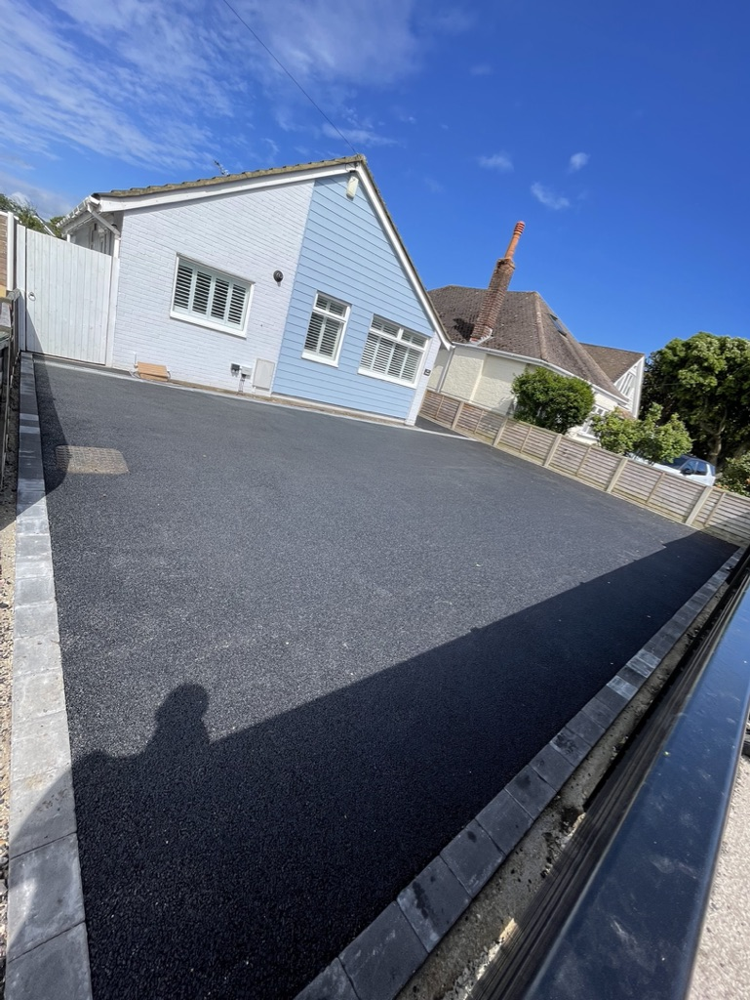

A family-run groundworks and civil engineering contractor delivering domestic, commercial and residential projects across Dorset — from the first dig to the finished surface.
D&C Groundworks & Civils Ltd is a family-run groundworks and civil engineering contractor based in Christchurch, delivering domestic and commercial projects across Bournemouth, Poole and the wider Dorset region. Founded on over a decade of hands-on industry experience, we provide a complete groundworks service — from site clearance and excavation through to foundations, drainage and finished surfaces. A significant proportion of our work comes through referrals and returning clients who value our quality, transparent pricing and dependable delivery.
Much of our work comes through word of mouth, and that's no accident. We build lasting relationships through honest advice, clear communication and a job done right — so clients return, and recommend us.
With over a decade of hands-on experience across domestic and commercial groundworks, there's little we haven't tackled — from garden dig-outs and drainage to foundations, driveways and full site works.
Fully insured and committed to health and safety on every site, we manage each project from first consultation to final handover — turning up when we say we will, and leaving every site clean and safe.
A complete groundworks service for domestic and commercial projects across Dorset — every stage handled to the highest standard, on time and on budget.
Dig-outs, muck-away, bulk excavation and levelling — the solid start every project needs.
Strip, trench-fill and raft foundations laid accurately and to engineer's specification.
Foul and surface-water drainage, soakaways and full below-ground infrastructure.
Sub-bases, block paving, resin, tarmac and concrete finishes built to last.
Complete groundworks packages for new builds and developments, managed end to end.
From garden projects to commercial civils — the same standard and care on every job.

Real groundworks across Dorset — from first dig to finished surface. Follow our live sites weekly, or browse the full project gallery.

Get in touch with our friendly team in Dorset for a free, no-obligation quote.